目錄
Quick Setup視頻教程
Quick Setup流程與畫面
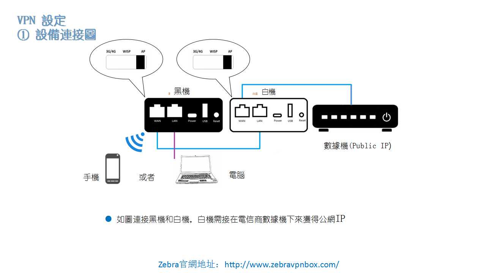 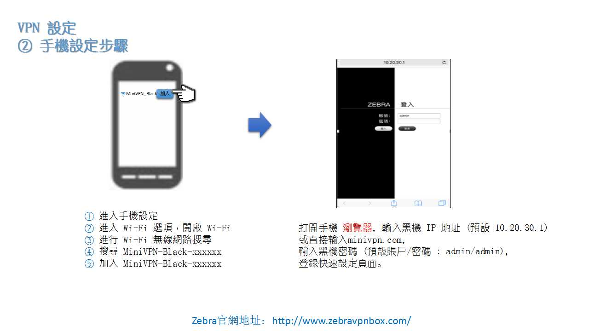 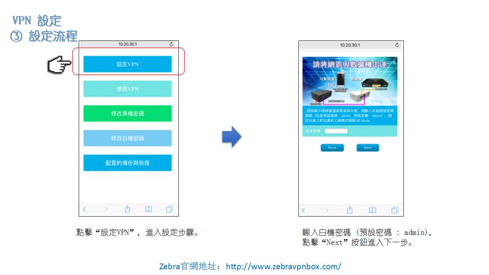 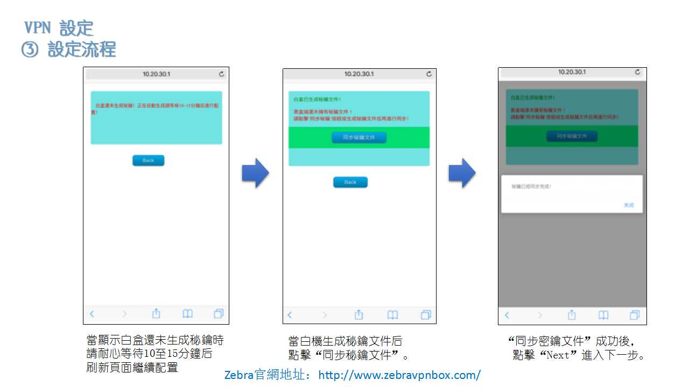 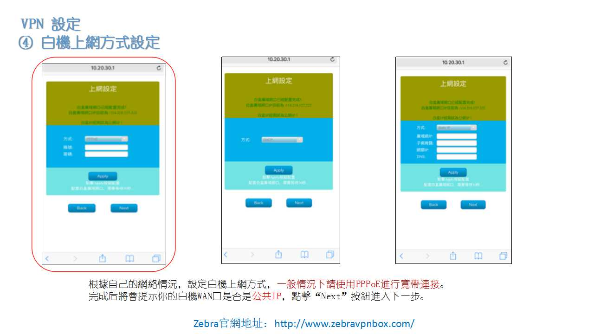 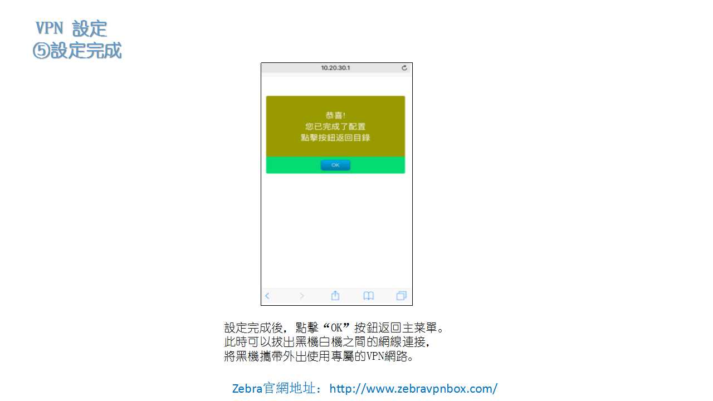 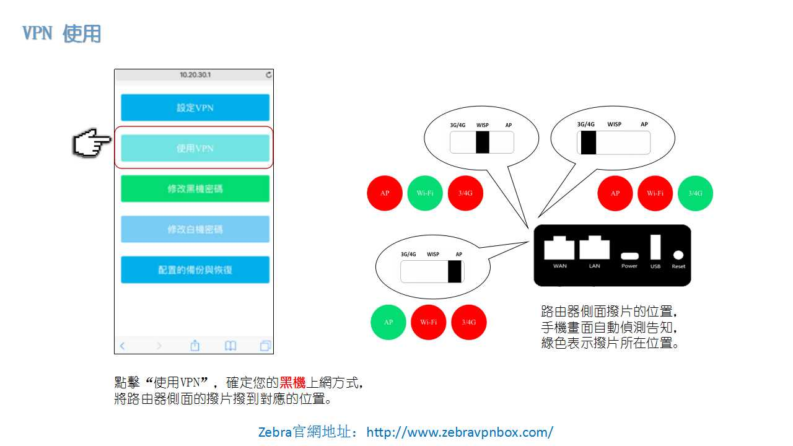 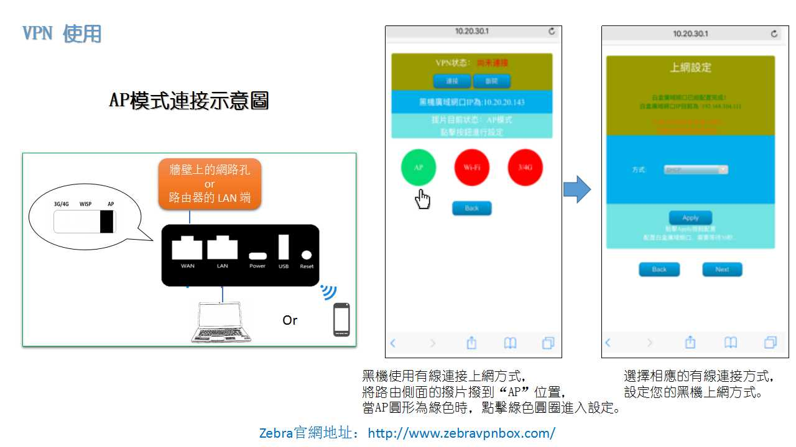 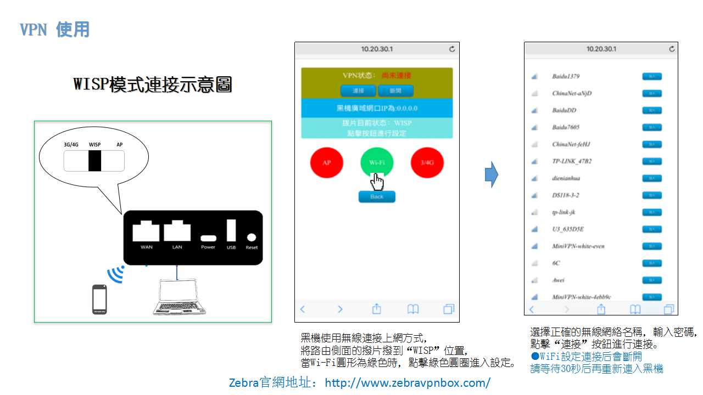 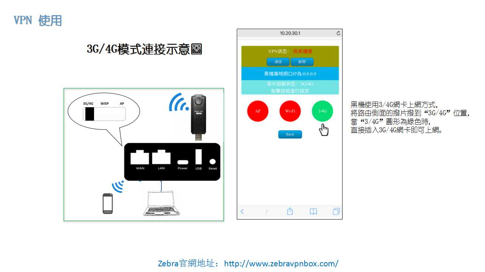 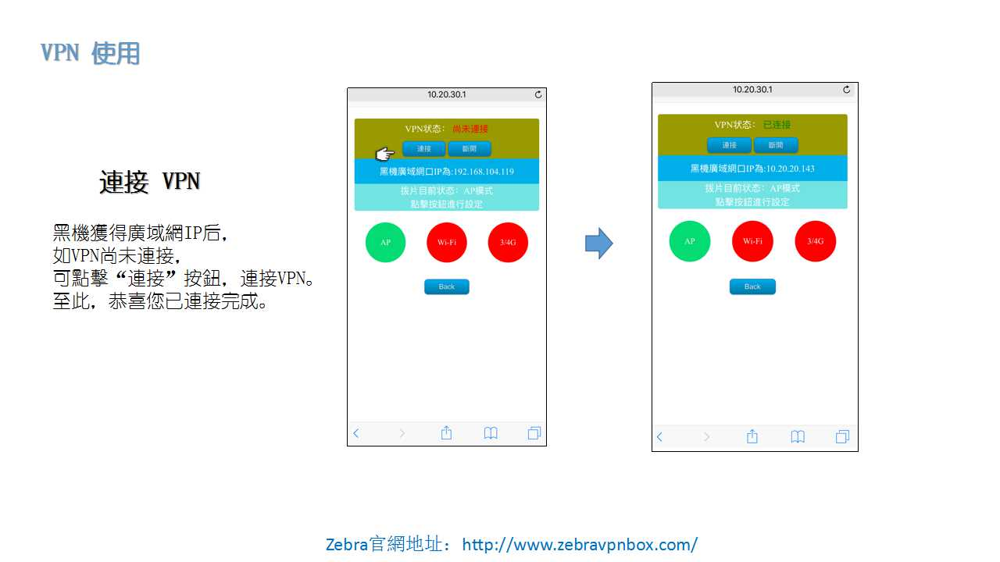
一、使用前須知
1. 路由器的初始用戶名是admin 密碼是 admin，黑色路由器（以下簡稱黑盒）出廠默認的IP是10.20.30.1，白色路由器（以下簡稱白盒）出廠默認的IP是10.20.20.1。
2. 黑盒的默認SSID是MiniVPN-black，白盒的默認SSID是MiniVPN-white，默認沒有加密。
3. 恢復出廠設置，在正常開機的狀態下，長按reset鍵10秒。
4. USB 埠不可以接硬碟或 U 盤，僅能插 3G/4GLTE USB 上網卡。
5. Switch button的3個狀態可以設置路由器WAN zone的連線方式。AP為網線連接，WISP為WIFI連接，3G為使用3G USB上網卡連接。
二、VPN設置嚮導
1. 將白盒和黑盒的switch開關（如圖1）撥到AP檔(最右側)，分別連接黑盒和白盒的電源線。
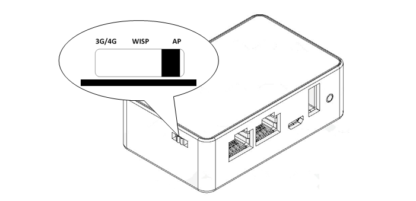圖1
2. 按照圖2所示連接黑盒白盒，通常ISP（英特網服務供應商Internet Service Provider）會在您的入戶終端放有一台modem或者路由器，將連接Internet的線連接到白盒WAN口(左側)，黑盒WAN口(左側)連接至白盒LAN口(右側)。若通過PC進行控制，請用網線將PC與黑盒LAN口(右側)連接；若通過移動端進行控制，請連接黑盒WIFI（默認SSID：MiniVPN-black）。
圖2
3. 使用PC連接至黑盒的，請在PC流覽器中輸入10.20.30.1位址登入控制介面（如圖3），或者移動端流覽器中輸入10.20.30.1位址登入控制介面（如圖4）。
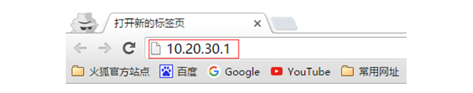圖3
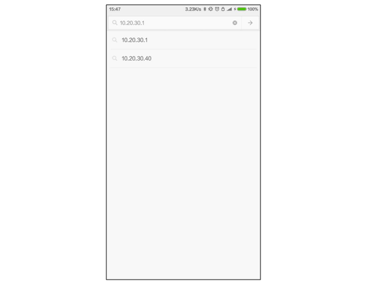圖4
4.進入“MiniVPN”==>“MiniVPN”設定頁面後。在如圖5頁面密碼欄位元輸入白盒密碼，預設為admin，如果已經修改過，請輸入您修改後的密碼。
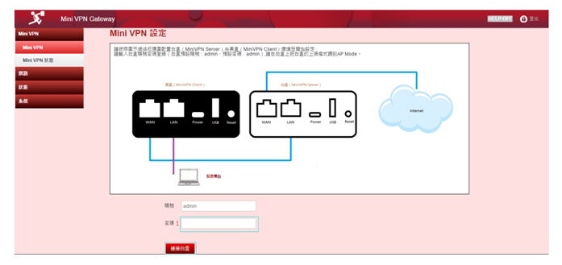圖5
5. 點擊如圖6所示頁面中“設定伺服器網路”按鈕進行白盒WAN口設定。
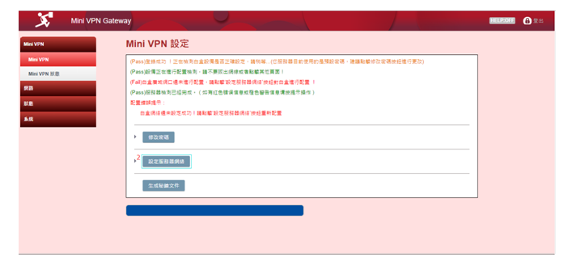圖6
對於白盒WAN口的設置，這一部分可以參考“AP連接方式”章節進行設定。在WAN口設置完成後，大約需要30秒鐘的時間等待配置生效，請等待頁面自動刷新。
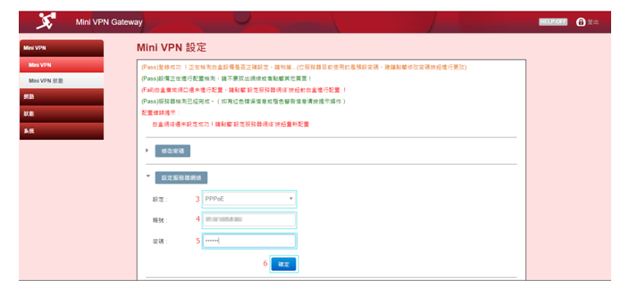圖7
6. 如果配置成功生效，刷新後的頁面會出現IP並提示為公網IP（如圖8），在頁面自動刷新之後點擊圖8頁面中 “生成金鑰檔”按鈕。
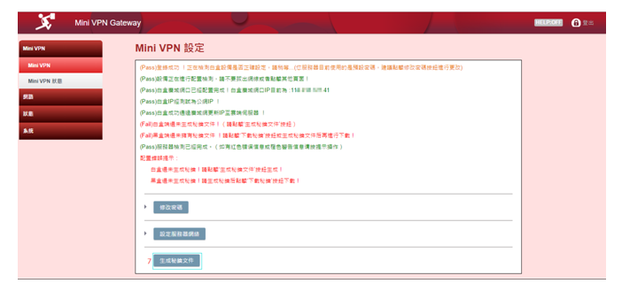圖8
在彈出來的對話方塊中點擊“確定”（如圖9），開始金鑰檔的生成。該過程需要進行大量的計算，所以是整個配置過程中最耗時間的階段，請耐心等待幾分鐘，待檔生成之後頁面會自動刷新。
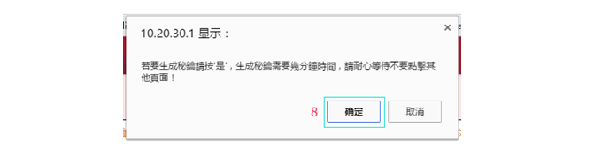圖9
7. 下載金鑰。步驟6成功配置後的頁面會顯示“白盒已生成金鑰檔”綠色文字，在自動刷新之後的頁面（如圖10）中點擊“下載金鑰”按鈕。
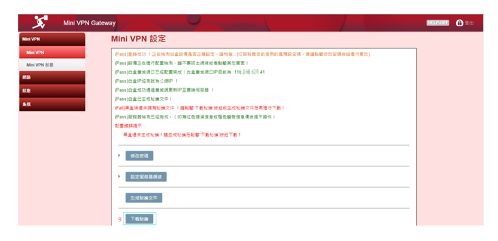圖10
當出現如圖11所示的對話方塊，點擊確定，下載成功。至此VPN設置全部完成，如果您可以看到頁面自動刷新後所有檢查項已經PASS（綠色），表明您已配置成功。如果還有沒有通過的檢查（如果還有紅色的Fail文字，或者橙色的警告文字），請試著按照提示進行修復。等到所有檢查項已經PASS之後，就可以斷開黑盒與白盒之間的連線了。 等您到了差旅住所，只要讓黑盒連入Internet，黑盒會自動連接VPN隧道。（將PC用網線連接到黑盒或連接黑盒WIFI，就可以使用VPN隧道連接白盒網路。） 。
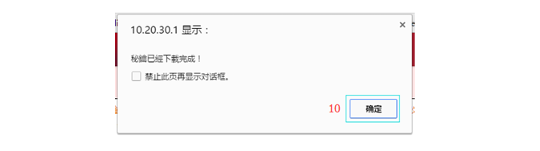圖11
三、修改管理密碼
管理介面目錄打開“系統”==>“管理”（如圖12）,在該頁面可以修改路由器管理密碼（適用于白盒和黑盒）
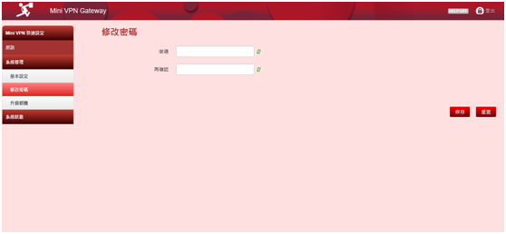圖12
四、修改WIFI密碼
管理介面目錄打開“網路”==>“WIFI無線”（如圖13），對WiFi-LAN埠進行“編輯”
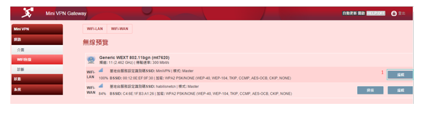圖13
點擊標籤“無線安全”（如圖14）
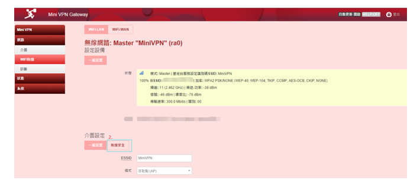圖14
在密碼欄位元輸入新的WIFI密碼，按“保存”按鈕，等待WIFI就緒。
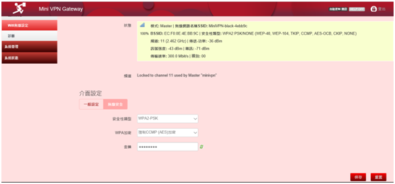圖15
五、AP連接方式
請將路由器（黑盒或白盒）switch開關撥到AP檔
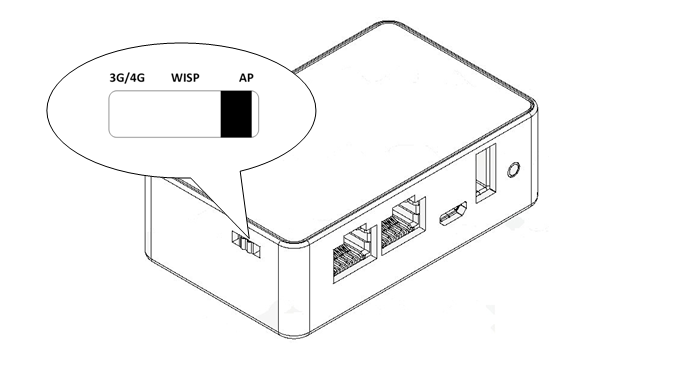圖16
然後在路由器管理介面“網路”==>“介面”中（如圖17）對埠WAN點擊“編輯”按鈕對埠進行設置
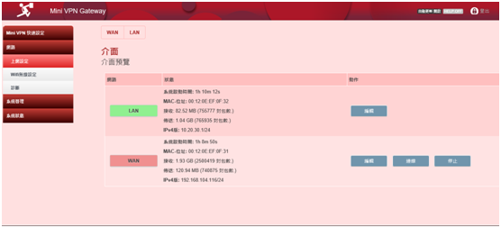圖17
PPPoE
協定欄位選擇“PPPoE”（如圖18）
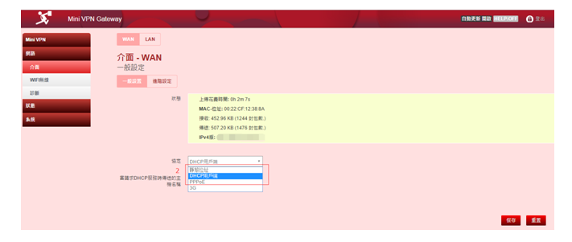圖18
點擊“交換器協定”
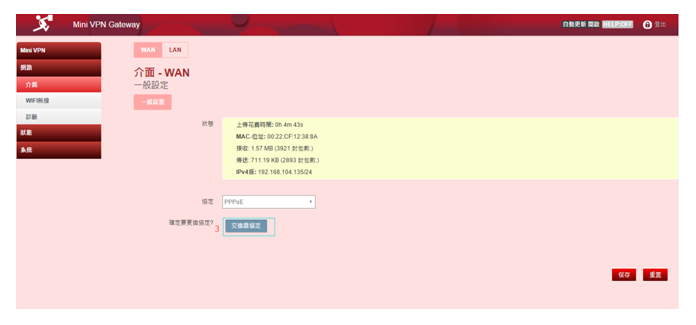圖19
在“PAP/CHAP驗證用戶名”欄位輸入ISP提供的PPPoE用戶名，“PAP/CHAP驗證密碼”欄位元輸入ISP提供的PPPoE密碼

圖20
靜態IP
協定欄位選擇“靜態位元址”，點擊“交換器協定”按鈕（如圖21）
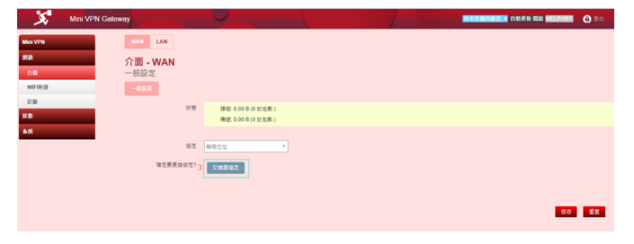圖21
在“IPV4位址”欄位輸入您取得的IP位址，“IPV4網路遮罩”選擇您的網路遮罩，“IPV4匝道器”填入您的閘道位址，這些參數需要從您的ISP處獲得
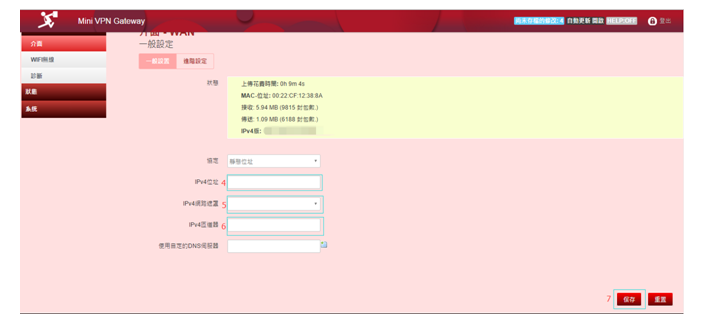圖22
六、WISP模式連接方式
請將路由器（黑盒或白盒）switch開關撥到WISP檔
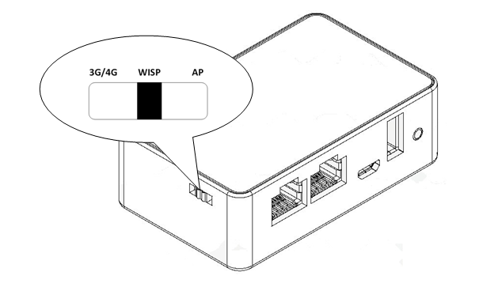圖23
然後在路由器管理介面“網路”==>“介面”中對埠WiFi-WAN點擊“編輯”按鈕
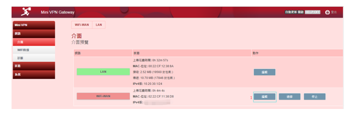圖24
跳轉到可供選擇的WIFI網路（如圖25），選擇要加入的WIFI網路點擊“加入網路”，（如果在網路清單當中沒有找到您要加入的網路，點擊頁面底部“再次掃描”，如圖26）
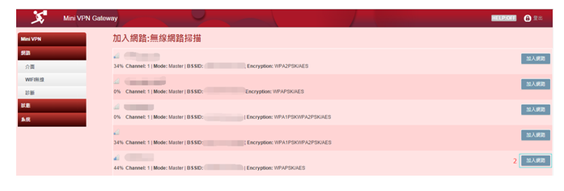圖25
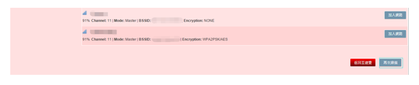圖26
在跳轉後的頁面的鑰匙欄位元填入WIFI密碼，點擊“保存”按鈕（如圖27），然後等待配置生效即可
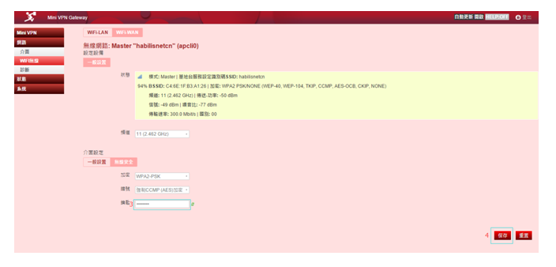圖27
七、3G連接方式
請將路由器（黑盒或白盒）switch開關撥到3G檔
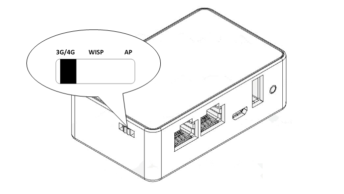圖28
然後在路由器管理介面“網路”==>“介面”中（如圖29）對埠3G點擊“編輯”按鈕，接下來的設置可能會因為USB網卡的不同和SIM卡的網路供應商而不同。如果本說明沒有涵蓋您要設定的網路，您可以致電供應商服務號進行諮詢。
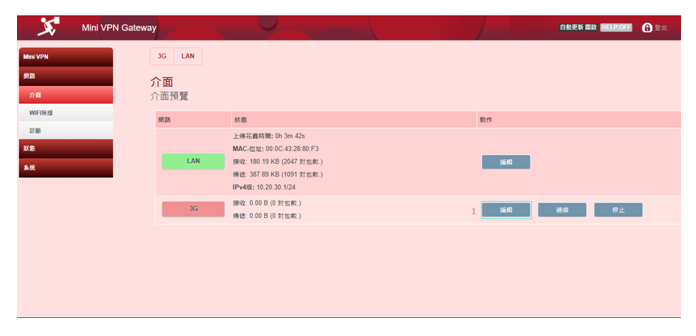圖29
根據您的運營商網路制式選擇服務型態為UTMS或者CDMA，下面是我們統計的常用運營商網路制式
大陸
CDMA:中國移動、中國電信
UMTS:中國聯通
臺灣
CDMA:亞太電信
UMTS:中華電信、臺灣大哥大、遠傳電信、臺灣之星
APN也會根據ISP不同而不同，下面是我們統計出來的列表
大陸
中國移動：cmnet
中國聯通：3gnet
中國電信：ctnet
臺灣
亞太電信：gtnet或internet信
中華電信：internet
臺灣大哥大：internet
遠傳電信：internet
臺灣之星：internet
PIN碼欄位，如果您有設置了保護SIM卡的PIN碼，請在此處填入，沒有設置請略過此欄位。
PAP/CHAP驗證用戶名和PAP/CHAP驗證密碼不是所有的運營商都需要填入，已知的需要填入的有
中國電信：用戶名 ctnet@mycdma.cn 密碼 vnet.mobi
填完需要的欄位元後按“保存”等待配置生效。
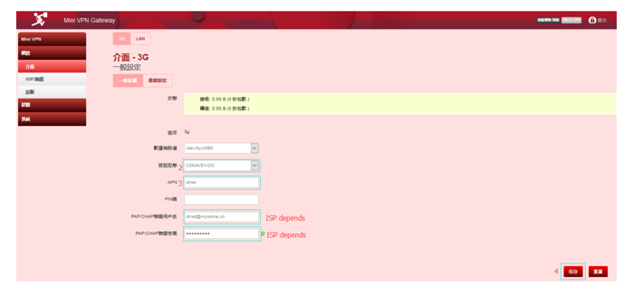圖30